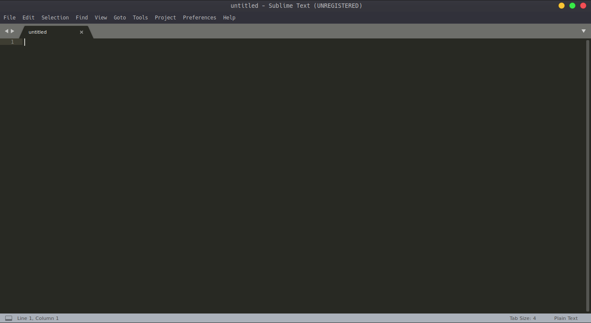

3 - Primer Programa en Python
Vamos a crear nuestro primer programa, pero antes de todo, hay un par de ideas que necesitamos comprender.
Pero antes que nada, un pequeño aviso de que este post será largo, el resto raramente serán así de largos,
pero espero que puedan entender que al ser el primer post como tal trabajando con el lenguaje, hay muchas cosas
que poner como contexto, pero principalmente, veremos como utilizar las herramientas que he recomendado.
Una vez veamos todas estas cosas, el resto será trabajar directamente con caracteristicas más concretas una por una.
Como mencionamos antes, Python es un lenguaje de programación interpretado, esto implica
que la mayoría de sus implementaciones ejecutan las instrucciones directamente sin una compilación
previa. Esto tiene algunas ventajas como el poder ejecutar lineas de código en tiempo real,
haciendo uso de un interprete, como el que trae Python con su propia instalación, así que
antes de crear nuestro primer programa, demosle un vistazo al Python Shell
en el IDLE de Python.
Crear un Script de Python
Hay dos ventanas principales con las que trabajaras al utilizar el IDLE: la ventana interactiva que es aquella que se abre cuando inicias el IDLE, y la ventana de script.
Puedes escribir código en ambas ventanas, la principal diferencia entre estas, es la forma en la que el código se ejecuta. Ahora veremos como escribir código en ambas ventanas y como se ejecuta.
La ventana interactiva
Esta contiene el Python Shell, una interfaz de usuario textual usada para interactuar con el lenguaje Python.
Cuando abres el IDLE por primera vez, el texto debería verse más o menos así:
Python 3.8.0 (default, Oct 28 2019, 16:14:01)
[GCC 8.3.0] on linux
Type "help", "copyright", "credits" or "license()" for more information.
>>>
La primera linea te dice que versión de Python está siendo utilizada, en este caso, el IDLe funciona en Python 3.8.0. La segunda y tercera linea dan un poco de información sobre el sistema operativo y algunos comandos para obtener información extra sobre Python.
El simbolo >>> en la última linea es llamado el prompt. Ahí es
donde ingresas tu código, por ejemplo, ingresa
Cuando presionas Enter evalúa la expresión, reduciendola tanto como es posible, muestra el resultado cuando no es posible reducirla más, en este caso 7 y entonces aparece el prompt esperando un nuevo input por tu parte.
>>> 3 + 4
7
>>>
El prompt de Python >>> aparece de nuevo después de cada resultado.
El funcionamiento de la ventana interactiva puede describirse como un bucle con tres pasos:
1. Python lee el código ingresado en el prompt.
2. Entonces el código es evaluado.
3. Y finalmente, el resultado es impreso en la ventana y un nuevo prompt se muestra.
Con frecuencia a este bucle se le conoce como Read-Evaluate-Print Loop, o REPL. Bucle Leer, Evaluar, Imprimir.
Vamos a intentar algo más interesante que sumar dos números.
El rito de iniciación de todos los programadores es escribir su primer programa
"Hola mundo", el cual imprime la frase "Hola mundo" en pantalla.
Para escribir texto en la pantalla con Python, se utiliza la función print().
Una función es un pedazo de código que usualmente toma un argumento, lo procesa y realiza
alguna acción particular o devuelve algún valor (return value).
Estas funciones son muy parecidas a las funciones matemáticas que seguramente ya conoces,
pero hablaremos mucho más a fondo sobre eso más adelante, de momento, quedate con la idea de que
una función es un pedazo de código al cual le pasas un valor, y hace algo con el, en el caso de la
función
print(), imprimirlo en pantalla.
para usar la función print(), escribe la palabra print en el prompt de la ventana interactiva, seguido del texto "Hola mundo" entre parentesis.
>>> print("Hola mundo")
Hola mundo
>>>
"Hola mundo" es un argumento pasado a la función print().
"Hola mundo" debe ser escrito entre comillas para que el interprete de Python sepa que es un texto y no algo más.
Si estás utilizando el IDLE, a este punto ya habrás notado que el color del texto cambia en algunas partes de tu código, esto es conocido como highlight y lo hace el IDLE automaticamente, tiene la función de ayudar a identificar las diferentes partes del código.
Esto también suele estar implementado por defecto en casi cualquier editor de código moderno, más adelante veremos algunos ejemplos con los editores que recomendé en el post anterior.
La ventana interactiva solo puede ejecutar una linea a la vez, lo cual puede ser útil para experimentar con el lenguaje o realizar pruebas con pedazos de código muy pequeños, pero tiene muchas limitaciones, no es eficiente escribir cada una de las lineas de código cada vez que tengas que realizar una tarea y editar el código en caso de que te equivoques puede ser realmente complicado.
Afortunadamente, puedes escribir código de Python en un archivo de texto, entonces ejecutarlo utilizando un comando, estos son llamados script files.
Los scripts no solo tienen la ventaja de hacer mucho más fácil ejecutar código, sino también ayudan a poder compartir tu trabajo con los demás de manera muy simple.
La ventana de scripts
Para abrir la ventana de script en el IDLE, selecciona File > New File en el menú en la esquina superior izquierda o utiliza el comando Ctrl+N.
Cuando abres la ventana de scripts, la ventana interactiva se mantiene abierta. Cualquier output generado por la ventana de script se mostrará en la ventana interactiva, por lo que, si vas a trabajar utilizando el IDLE, es una buena idea tener ambas ventanas a la vista de tal forma que puedas ver ambas a la vez.
En la ventana de script, escribe el código que utilizaste para imprimir "Hola mundo" en la ventana interactiva.
print("Hola mundo")
Del mismo modo que en la ventana interactiva, el highlight también funciona en la ventana de script.
Antes de arrancar tu script, necesitas guardarlo. Para esto, selecciona File > Save y guarda el script como hola_mundo.py.
la parte .py es la extensión del archivo, esta indica que se trata de un script de Python.
Si guardas tu archivo con una extensión diferente, como .txt por ejemplo, el highlight
desaparecerá y todo será mostrado como texto plano. El highlight del IDLE solo funciona con código
guardado en un archivo .py.
Una vez has guardado tu script, solo te queda por arrancarlo, para ello ve al menú superior y selecciona Run > Run Module y verás "Hola mundo" aparecer en la ventana interactiva.
Hola mundoTambién puedes presionar F5 para arrancar tu script desde la ventana de scripts.
Cada vez que arrancas un script, verás el siguiente output en la ventana interactiva
>>> ========== RESTART ==========
Esto es para separar cada ejecución entre sí, ya que sí ejecutaras varias veces el mismo script, podría llegar a ser confuso al mezclarse los outputs de cada ejecución.
Para abrir un archivo, ve al menú superior y selecciona File > Open.
El IDLE abrirá cada script en una nueva ventana de script.
Hacer doble click en un archivo .py en el explorador de archivos no hará que puedas editarlo, para abrilo con el IDLE tendrás que hacer click derecho y elegir la opción de editar con IDLE.
Otros editores de código
Ahora veremos como utilizar los otros editores que mencioné en el post anterior (Visual Studio Code, Atom.io y Sublime text 3) para crear un archivo de python y al finalm como utilizar la consola del sistema para ejecutar el código desde ahí sin el IDLE.
Visual Studio Code
Primero hay que instalar el editor, en el post anterior dejé un link de descarga, pero en caso de que
no lo hayas descargado todavía, haz click aquí
para ir a la página de descarga.
Aquí puedes ver la interfaz de Visual Studio Code, para crear un nuevo archivo ve al menú File > New File y para abrir uno ve a File > Open File
El lado bueno de este editor de código es que tiene muchas herramientas, en la barra izquierda, está el submenú
de extensiones, en donde puedes encontrar una enorme cantidad de temas para iconos, así como para el highlight,
así como un montón de herramientas.
Recomendaría utilizar la extensión de Python. Aparte de eso, puedes dar una vuelta y encontrar un tema que te parezca
agradable para la vista. Yo actualmente utilizo el color theme Ayu Dark y el file icon theme Ayu
Auqnue hay muchos muy buenos como Monokai, Slack, Dracula entre un montón más.
Atom.io
También dejé un link de descarga a este editor en el post anterior, pero en caso de que no lo hayas
descargado todavía, haz click aquí para ir
a la página de descarga.
Este editor de código es similar al anterior, tanto así, como que Visual Studio Code es un fork de Atom,
es decir, está basado en este editor.
Este tiene una gran ventaja y es su funcionamiento altamente integrado con github,
pero eso es algo de lo que no hablaremos hasta muuucho más adelante en este curso, básicamente una vez hayamos terminado,
así que de momento es algo que no nos agrega nada a nosotros. Pero aun así, es un editor de código muy
agradable de utilizar, también tiene muchas extensiones, temas y demás herramientas que nos pueden facilitar mucho el trabajo.
El proceso para crear y abrir archivos es exactmaente el mismo que hasta ahora, File > New File para crear un nuevo archivo y File > Open File para abrir uno.
Sublime Text 3
Haz click aquí para ir a la página de descarga de Sublime Text 3.
Este es un poco diferente a los dos anteriores. Como puedes notar en la interfaz, es mucho más simple que los dos anteriores, pero no te dejes engañar, este es probablemente uno de los editores de texto más poderosos que hay gracias a todas sus extensiones que puedes encontrar por internet para añadirle funcionalidad casi ilimitada.
Todo esto de las extensiones, tanto en este editor como en los otros es un tema que se sale completamente del topico del curso, pero si te interesa aprender a usar este editor y sacarle todo el provecho, puedes encontrar una infinidad de videos en youtube en español e inglés que te enseñan a modificar practicamente todos los aspectos de este poderoso editor de código.
Eso sí, te aviso, este editor es de pago. Puedes utilizarlo de manera gratuita, pero de vez en cuando te saltará
una ventana diciendo que compres el software.
Ejecutar un script de Python desde la consola
Si piensas utilizar uno de estos editores no podrás ejecutar tus script de forma tan simple como con el IDLE de Python, en estos casos tendrás que hacer uso de la consola integrada en el editor como en el caso de Visual Studio Code o incluso instalar varias extensiones solo para esto, pero para evitar todas estas molestias, es mucho más fácil y simple hacer uso de la consola de comandos de tu sistema operativo.
Si estás utilizando Windows, ve al menú de inicio y escribe cmd y da Enter.
En el caso de MacOS, en el menú de aplicaciones, ve al menú utilities, entonces da doble click en Terminal
o presiona Command - spacebar para abrir un spotlight y escribe "Terminal,"
entonces haz doble click al resultado de la busqueda.
En linux es diferente dependiendo de la distribución y a veces incluso depende del WM que estés utilizando,
pero en la mayoría aceptan el comando Ctrl+T para ejecutar una terminal, en caso de que esto no funcione,
muchas veces se encuentra la aplicación de terminal en algún equivalente al super menu.
En caso de que ninguna de estas opcioens funcione, entonces tendrás que buscar por internet como abrir la consola en tu distro.
El lado bueno es que, sin importar en que sistema de estos tres principales estés, los comandos más básicos para moverte por
tu computadora suelen ser los mismos o muy similares.
si utilizas el comando ls en Linux y MacOS te mostrará tanto la ubicación actual como todo el contenido
en la carpeta en que te encuentras ahora mismo. En Windows, esto se hace con el comando dir
para ir a alguna carpeta que sea accesible desde la actual, hay que utilizar el comando cd [folder name]
por ejemplo, para ir a la carpeta de descargas se utilizaría el comando cd descargas
Para regresar a una carpeta anterior, se utiliza el comando cd ..
con esto, puedes seguir la ruta hasta la carpeta donde hayas guardado tu archivo hola_mundo.py
$ cd Documentos/Python/
$ ls
carpeta1 carpeta2 ejemplo.txt hola_mundo.py
una vez aquí, para ejecutar tu script tendrás que utilizar el comando python [script file]
$ python hola_mundo.py
Hola mundo
$
En el caso de linux y MacOS este código se ejecutará sin problemas, pero en Windows (si no me falla la memoria), la ventana se cerrará automaticamente una vez se ejecute. En este caso, recomendaría editar el script hola_mundo.py y agregar al final la linea input().
Hablaremos de la función input() más adelante, de momento, nos ayudará a que nuestro script no se cierre automaticamente en Windows en caso de hacerlo hasta que no pulsemos la tecla Enter.
De momento esto es todo, como dije al inicio, este post tenía que ser muy largo sí o sí, había muchas cosas que explicar, entre ellas principalmente como utilizar el IDLE de python o los editores de código que recomendé para trabajar a lo largo del curso, además de un poco de información sobre como navegar utilizando la consola.
Hay muchas otras cosas que se pueden hacer con la consola, hay una infinidad de comandos, y sinceramente recomiendo un montón aprender a manejarla correctamente, ya que puede salvarnos en más de una ocación, y saber manejarnos con ella, hará que en el momento que trabajemos escribiendo, leyendo y modificando archivos sea mucho más simple de comprender.
Por ahora lo vamos a dejar por aquí, prometo que el próximo post no será tan largo, empezaremos a ver algunos ejemplos
más interesantes e incluso un par de ejercicios.
Concretamente veremos dos cosas: Errores y variables.
Let's all love Lain <3.